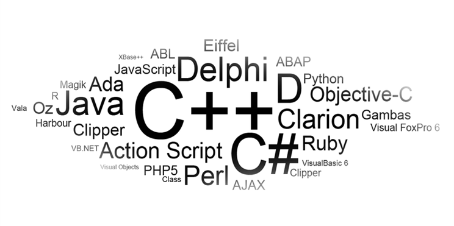

- Java
- C++
- Python
- C#
Java es un lenguaje de programación poderoso, versátil y muy utilizado, ideal para aprender POO y crear desde apps móviles hasta grandes sistemas empresariales.
C++ es un lenguaje muy potente, rápido y versátil que combina lo mejor del lenguaje C con herramientas modernas de programación. Es muy usado para crear videojuegos, programas complejos y aprender conceptos fundamentales de programación.
Python es un lenguaje muy fácil de aprender, pero extremadamente poderoso. Es ideal para aprender los fundamentos de la programación orientada a objetos y también para trabajar en proyectos avanzados como inteligencia artificial o desarrollo web.
C# es un lenguaje de programación moderno, creado por Microsoft en el año 2000 como parte de su plataforma NET.
